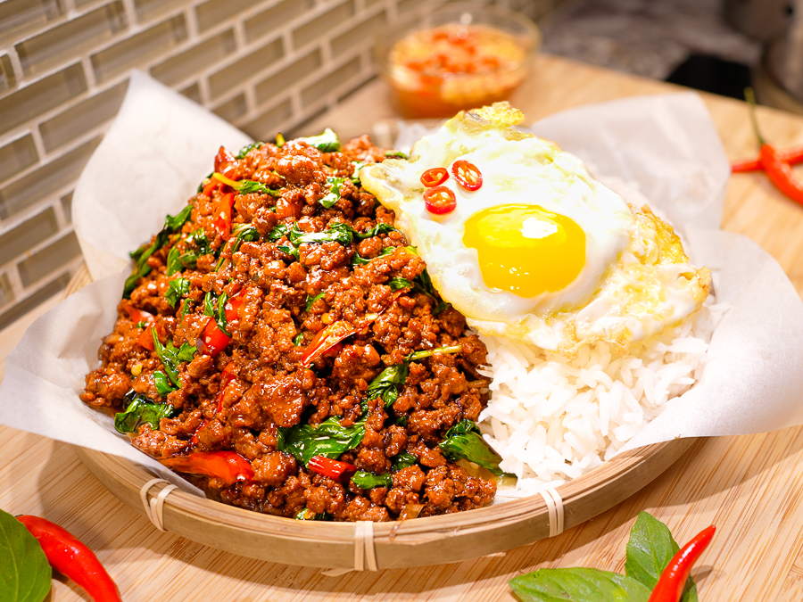
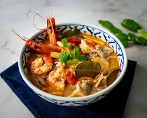
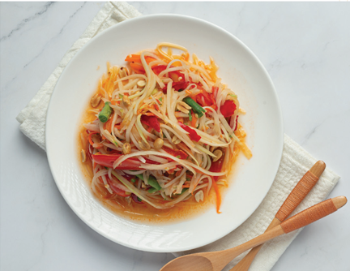
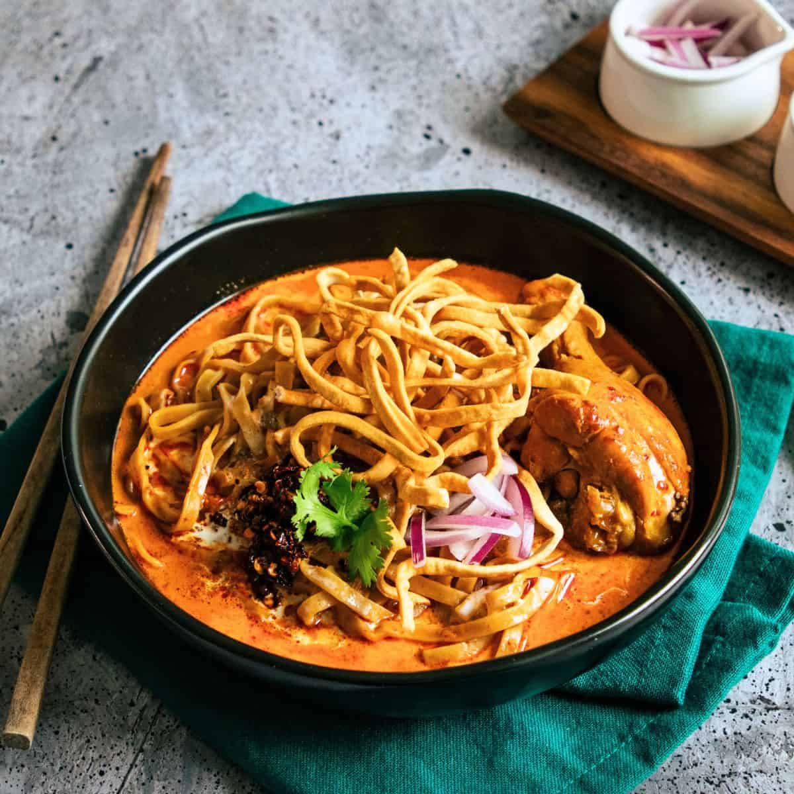

Thai food is a diverse cuisine known for its vibrant flavors, aromatic herbs, and a harmonious balance of sweet, sour, salty, and spicy tastes. It often incorporates fresh ingredients like lemongrass, chilies, and galangal, and features dishes like curries, stir-fries, and soups. And these are top 5 thai food and places where can you find them!
1.Krapao

"Krapao"refers to holy basil in Thai cuisine. It's a key ingredient in the popular dish Pad Kra Pao , which is a stir-fry typically made with meat , chili peppers, garlic, and holy basil.2.Tomyum

Tom Yum is a flavorful and aromatic Thai soup known for its distinctive hot and sour taste. It typically features a broth infused with lemongrass, galangal, lime leaves, and chili peppers, often with shrimp, mushrooms, and other vegetables.3.Somtum

Som tum is a spicy Thai salad, primarily known as papaya salad, originating from the Isaan region of Thailand. It features shredded green papaya as its base, along with a mix of ingredients like chili peppers, garlic, fish sauce, peanuts, and lime juice. 4.Khaosoi

Khao Soi is a Northern Thai curry noodle soup, known for its rich, creamy, and slightly spicy coconut milk-based broth. It typically features egg noodles, a choice of meat (chicken or beef), and is topped with crispy fried noodles, cilantro, green onions, lime wedges, and pickled mustard greens.5.PadthaiPad Thai is a popular Thai stir-fried noodle dish, known for its sweet, sour, and savory flavors. It typically features rice noodles, scrambled eggs, tofu, bean sprouts, and a protein like shrimp or chicken, all tossed in a flavorful sauce.